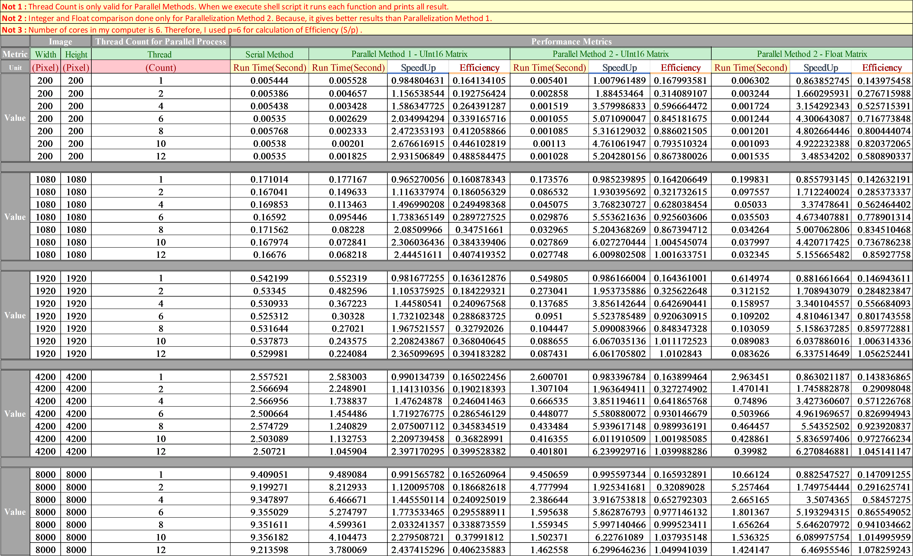
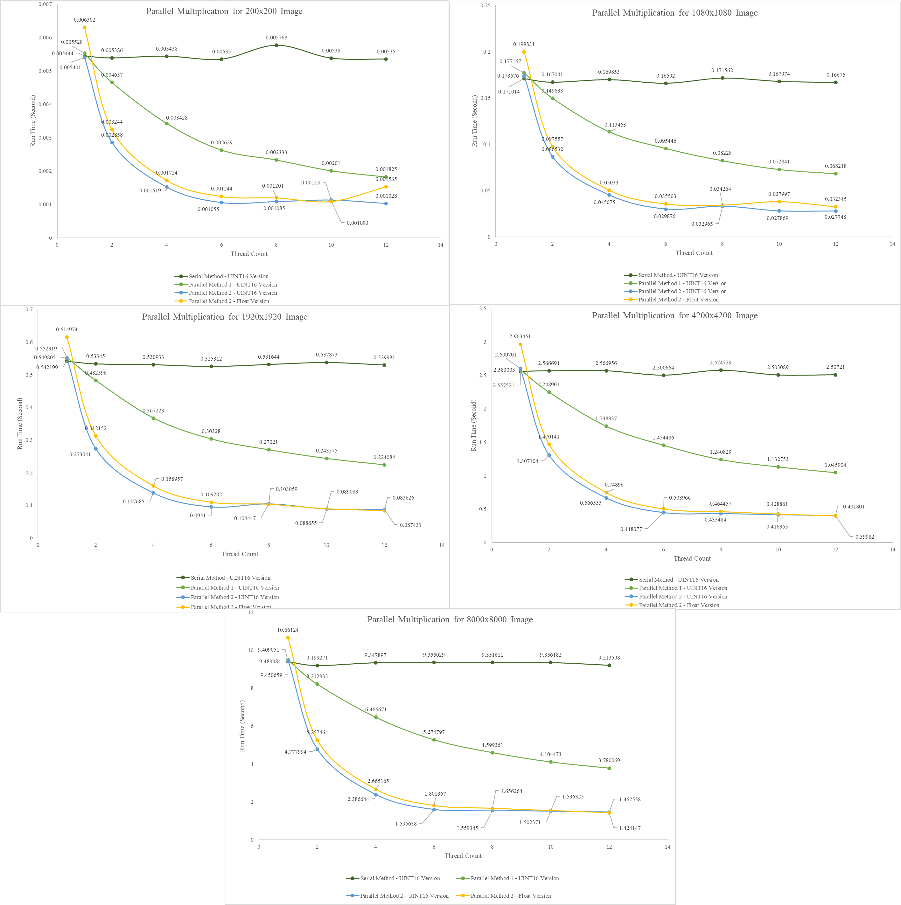
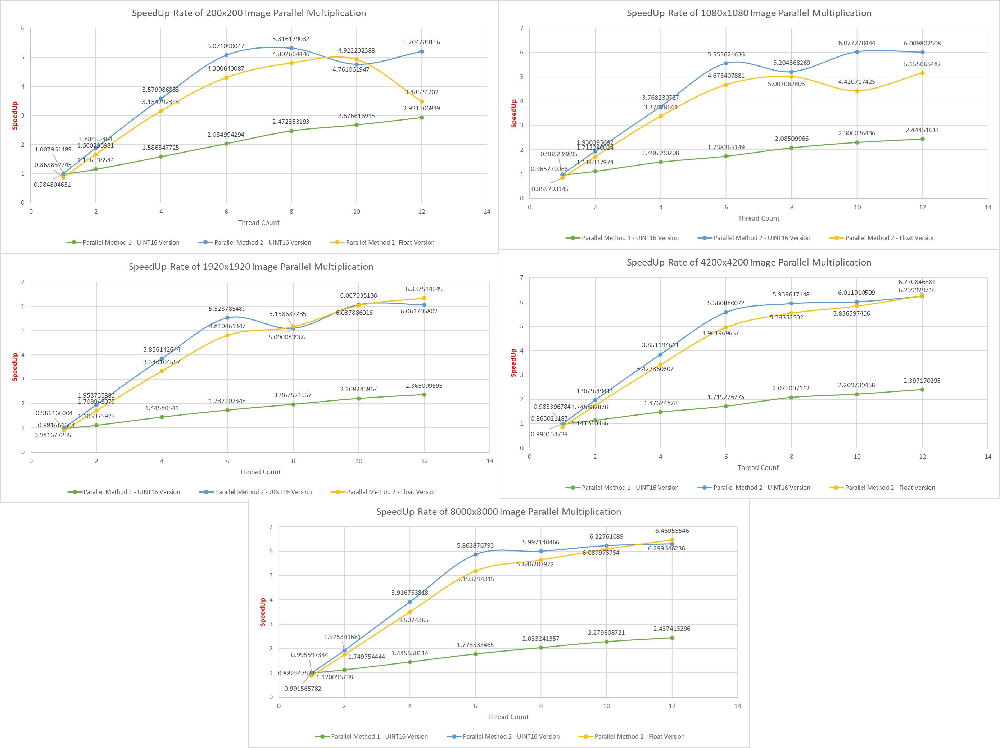
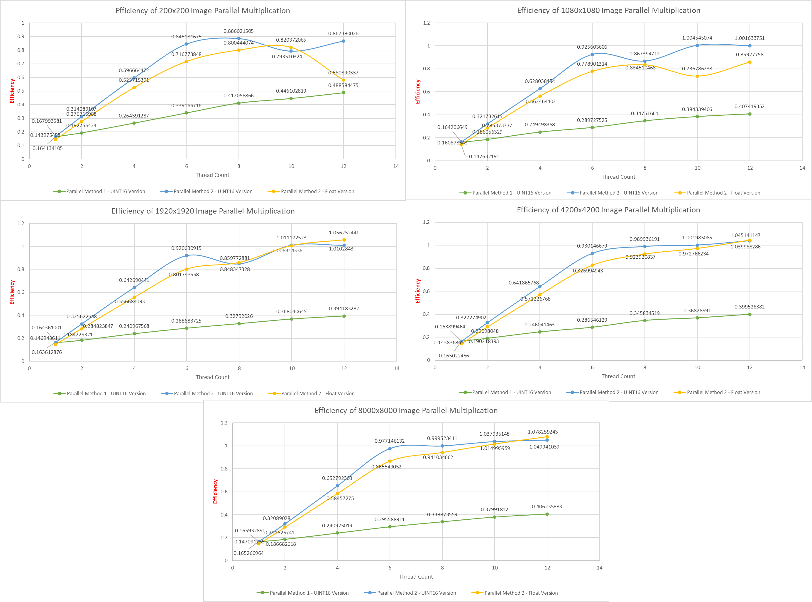

Navigating Parallel Computing Paradigms: CUDA, OpenMP, MPI, and Architectural Classifications
Introduction:
As the demand for faster and more efficient computing solutions continues to grow, the realm of parallel computing offers a diverse landscape of programming paradigms and architectural classifications. In this article, we will explore three influential programming paradigms—CUDA, OpenMP, and MPI—while also delving into the fundamental architectural classifications of Single Instruction, Single Data (SISD), Single Instruction, Multiple Data (SIMD), Multiple Instruction, Single Data (MISD), and Multiple Instruction, Multiple Data (MIMD).
Programming Paradigms:
CUDA (Compute Unified Device Architecture):
CUDA, developed by NVIDIA, stands as a powerful parallel computing platform and API. Leveraging the computational prowess of GPUs (Graphics Processing Units), CUDA enables developers to offload parallelizable portions of applications to the GPU.
Key Features of CUDA:
- Parallel Processing with GPU: GPU acceleration allows concurrent execution, enhancing performance for various computational tasks.
- Unified Memory Model: Seamless data transfer between the CPU and GPU simplifies programming and improves data accessibility.
- Thrust Library: Integrated with CUDA, the Thrust library offers a high-level interface for parallel algorithms and data structures.
OpenMP (Open Multi-Processing):
OpenMP provides an industry-standard API for shared-memory parallelization in languages like C, C++, and Fortran. Compiler directives simplify the parallel programming process, making it accessible for developers aiming to harness multicore processors.
Key Features of OpenMP:
- Pragmatic Directives: Special annotations in the code guide the compiler in generating parallel code without extensive parallel programming expertise.
- Worksharing Constructs: Constructs for parallel loops, sections, and tasks distribute work effectively across available processor cores.
- Portability: OpenMP is platform-independent, making it suitable for a broad range of systems.
MPI (Message Passing Interface):
MPI serves as a communication protocol and programming model for distributed-memory parallel computing. It facilitates communication and coordination between multiple processors, making it ideal for applications requiring collaboration among independent computing nodes.
Key Features of MPI:
- Point-to-Point Communication: Processes communicate through point-to-point messaging, enabling data exchange between specific pairs of processes.
- Collective Communication: Support for collective communication operations facilitates efficient data exchange among all processes in a communicator.
- Dynamic Process Management: MPI provides mechanisms for dynamic process creation and management.
Architectural Classifications:
SISD (Single Instruction, Single Data):
- In an SISD architecture, a single processor executes a single instruction on a single piece of data at a time.
- Linear execution of instructions with limited parallelism.
- Suited for sequential tasks with no inherent parallelism.
SIMD (Single Instruction, Multiple Data):
- SIMD architecture involves a single control unit issuing the same instruction to multiple processing elements, each operating on different data simultaneously.
- Parallel execution of the same instruction across multiple data elements.
- Efficient for data parallelism, such as vectorized operations in graphics processing or scientific simulations.
MISD (Multiple Instruction, Single Data):
- MISD architecture involves multiple processing units, each executing different instructions on the same piece of data.
- Each processor executes a unique instruction on the same data element.
- Rare in practical applications due to challenges in maintaining synchronization.
MIMD (Multiple Instruction, Multiple Data):
- MIMD architecture is the most flexible and common form of parallel computing.
- Multiple processors operate independently, executing different instructions on different data elements.
- Suited for a broad range of parallel tasks, from complex simulations to distributed computing.
Conclusion:
In the dynamic landscape of parallel computing, understanding the nuances of programming paradigms like CUDA, OpenMP, and MPI, alongside the architectural classifications of SISD, SIMD, MISD, and MIMD, is crucial. Each paradigm and architecture offers distinct advantages, empowering developers to make informed decisions based on the specific requirements of their applications. As technology continues to evolve, the synergy between these paradigms and architectures will play a pivotal role in shaping the future of parallel computing.
Detailed Comparison:

Run Time Results:

SpeedUp Results Comparison:

Efficiency Results:

Software Development for Parallel Computers
/* #include "dependencies.h" int main() { fillRandomArray(inputImage); fillEmptyArray(outputImage); uint16_t threadCalculation = lowerDiagonalIndexMaxRow - lowerDiagonalIndexMinRow; printf("Thread Rate : %d", threadCalculation); parallelMultiplication_Stable_Master(); serialMultiplication_Stable_Master(); printArray(inputImage,"Input Image"); printArray(outputImage,"Output Image"); serialMultiplication_Stable(); parallelMultiplication_Method1(); parallelMultiplication_Method_Stable_Non_Schedule(); serialMultiplication_Stable(); parallelMultiplication_Method_Stable_1(); parallelMultiplication_Method_Stable_2(); serialMultiplication(); parallelMultiplication_Method1(); parallelMultiplication_Method2(); parallelMultiplication_Method3(); #ifdef encapsulatedVersion startTimeStamp = omp_get_wtime(); #pragma omp parallel for schedule(static, OMP_SCHEDULE_ITER_NUMBER) collapse(OMP_SCHEDULE_COLLAPSE_NUMBER) private(outerIterRow, outerIterCol) shared(inputImage, outputImage) for(outerIterRow = lowerDiagonalIndexMinRow; outerIterRow < lowerDiagonalIndexMaxRow; outerIterRow++) { for(outerIterCol = lowerDiagonalIndexMinCol; outerIterCol < lowerDiagonalIndexMaxCol; outerIterCol++) { if(outerIterCol + 1 < outerIterRow) { getDiagonalMatrix(inputImage, diagonallyMirroredArray, outerIterRow, outerIterCol); getSubMatrix(inputImage, flowArray, outerIterRow, outerIterCol); uint32_t manualIteratorRow = 0; uint32_t manualIteratorCol = 0; for(i= outerIterRow - WINDOW_OFFSET; i <= outerIterRow + WINDOW_OFFSET; i++) { for(j= outerIterCol - WINDOW_OFFSET; j <= outerIterCol + WINDOW_OFFSET; j++) { for(k=0; k < SIZE_WINDOW; k++) { outputImage[i][j] += flowArray[manualIteratorRow][k] * diagonallyMirroredArray[k][manualIteratorCol++]; } manualIteratorRow++; } //printf("Thread Number - %d",omp_get_thread_num()); } } } } stopTimeStamp = omp_get_wtime(); printConsoleNotification(1, startTimeStamp, stopTimeStamp); printArray(outputImage,"Output Image"); startTimeStamp = omp_get_wtime(); #pragma omp parallel for schedule(static,OMP_SCHEDULE_ITER_NUMBER) collapse(OMP_SCHEDULE_COLLAPSE_NUMBER) private(outerIterRow, outerIterCol) shared(inputImage, outputImage) for(outerIterRow = lowerDiagonalIndexMinRow; outerIterRow < lowerDiagonalIndexMaxRow; outerIterRow++) { for(outerIterCol = lowerDiagonalIndexMinCol; outerIterCol < lowerDiagonalIndexMaxCol; outerIterCol++) { if(outerIterCol + 1 < outerIterRow) { getDiagonalMatrix(inputImage, diagonallyMirroredArray, outerIterRow, outerIterCol); getSubMatrix(inputImage, flowArray, outerIterRow, outerIterCol); uint32_t manualIteratorRow = 0; uint32_t manualIteratorCol = 0; for(i= outerIterRow - WINDOW_OFFSET; i <= outerIterRow + WINDOW_OFFSET; i++) { for(j= outerIterCol - WINDOW_OFFSET; j <= outerIterCol + WINDOW_OFFSET; j++) { for(k=0; k < SIZE_WINDOW; k++) { #pragma omp critical outputImage[i][j] += flowArray[manualIteratorRow][k] * diagonallyMirroredArray[k][manualIteratorCol++]; } manualIteratorRow++; } //printf("Thread Number - %d",omp_get_thread_num()); } } } } stopTimeStamp = omp_get_wtime(); printConsoleNotification(1, startTimeStamp, stopTimeStamp); printArray(outputImage,"Output Image"); startTimeStamp = omp_get_wtime(); #pragma omp parallel for schedule(static,OMP_SCHEDULE_ITER_NUMBER) collapse(OMP_SCHEDULE_COLLAPSE_NUMBER) private(outerIterRow, outerIterCol) shared(inputImage,outputImage) for(outerIterRow = lowerDiagonalIndexMinRow; outerIterRow < lowerDiagonalIndexMaxRow; outerIterRow++) { for(outerIterCol = lowerDiagonalIndexMinCol; outerIterCol < lowerDiagonalIndexMaxCol; outerIterCol++) { uint32_t i,j,k; for(i= outerIterRow - WINDOW_OFFSET; i <= outerIterRow + WINDOW_OFFSET; i++) { for(j= outerIterCol - WINDOW_OFFSET; j <= outerIterCol + WINDOW_OFFSET; j++) { for(k=0; k < SIZE_WINDOW; k++) { outputImage[i][j] += inputImage[i][j+k] * inputImage[j+k][i]; } //printf("Thread Number - %d",omp_get_thread_num()); } } } } stopTimeStamp = omp_get_wtime(); printConsoleNotification(2, startTimeStamp, stopTimeStamp); #endif //printArray(inputImage,"Input Image"); //printArray(outputImage,"Output Image"); stop = 1; return 0 ; } void serialMultiplication() { startTimeStamp = omp_get_wtime(); for(outerIterRow = lowerDiagonalIndexMinRow; outerIterRow < lowerDiagonalIndexMaxRow; outerIterRow++) { for(outerIterCol = lowerDiagonalIndexMinCol; outerIterCol < lowerDiagonalIndexMaxCol; outerIterCol++) { if(outerIterCol + 1 < outerIterRow) { getDiagonalMatrix(inputImage, diagonallyMirroredArray, outerIterRow, outerIterCol); getSubMatrix(inputImage, flowArray, outerIterRow, outerIterCol); uint32_t manualIteratorRow = 0; uint32_t manualIteratorCol = 0; for(i= outerIterRow - WINDOW_OFFSET; i <= outerIterRow + WINDOW_OFFSET; i++) { for(j= outerIterCol - WINDOW_OFFSET; j <= outerIterCol + WINDOW_OFFSET; j++) { for(k=0; k < SIZE_WINDOW; k++) { outputImage[i][j] += flowArray[manualIteratorRow][k] * diagonallyMirroredArray[k][manualIteratorCol++]; } manualIteratorRow++; } } } } } stopTimeStamp = omp_get_wtime(); printArray(outputImage,"Output Image"); printConsoleNotification(1, startTimeStamp, stopTimeStamp); } void serialMultiplication_Stable() { startTimeStamp = omp_get_wtime(); for(outerIterRow = lowerDiagonalIndexMinRow; outerIterRow < lowerDiagonalIndexMaxRow; outerIterRow++) { for(outerIterCol = lowerDiagonalIndexMinCol; outerIterCol < lowerDiagonalIndexMaxCol; outerIterCol++) { if(outerIterCol + 1 < outerIterRow) { for(i= outerIterRow - WINDOW_OFFSET; i <= outerIterRow + WINDOW_OFFSET; i++) { for(j= outerIterCol - WINDOW_OFFSET; j <= outerIterCol + WINDOW_OFFSET; j++) { for(k=0; k < SIZE_WINDOW; k++) { outputImage[i][j] += inputImage[i][j+k] * inputImage[j+k][i]; } } } } } } stopTimeStamp = omp_get_wtime(); printArray(outputImage,"Output Image"); printConsoleNotification(100, startTimeStamp, stopTimeStamp); } void serialMultiplication_Stable_Enhanced() { startTimeStamp = omp_get_wtime(); for(outerIterRow = lowerDiagonalIndexMinRow; outerIterRow < lowerDiagonalIndexMaxRow; outerIterRow++) { for(outerIterCol = lowerDiagonalIndexMinCol; outerIterCol < lowerDiagonalIndexMaxCol; outerIterCol++) { if(outerIterCol + 1 < outerIterRow) { for(i= outerIterRow - WINDOW_OFFSET; i <= outerIterRow + WINDOW_OFFSET; i++) { for(j= outerIterCol - WINDOW_OFFSET; j <= outerIterCol + WINDOW_OFFSET; j++) { for(k=0; k < SIZE_WINDOW; k++) { outputImage[i][j] += inputImage[i][j+k] * inputImage[j+k][i]; } } } } } } stopTimeStamp = omp_get_wtime(); printArray(outputImage,"Output Image"); printConsoleNotification(100, startTimeStamp, stopTimeStamp); } void serialMultiplication_Stable_Master() { uint32_t rA,cA; uint32_t rB,cB; startTimeStamp = omp_get_wtime(); for(outerIterRow = lowerDiagonalIndexMinRow; outerIterRow < lowerDiagonalIndexMaxRow; outerIterRow++) { for(outerIterCol = lowerDiagonalIndexMinCol; outerIterCol < lowerDiagonalIndexMaxCol; outerIterCol++) { if(outerIterCol + 1 < outerIterRow) { rA = outerIterRow - WINDOW_OFFSET; cA = outerIterCol - WINDOW_OFFSET; rB = outerIterCol - WINDOW_OFFSET; cB = outerIterRow - WINDOW_OFFSET; for(i= outerIterRow - WINDOW_OFFSET; i <= outerIterRow + WINDOW_OFFSET; i++) { for(j= outerIterCol - WINDOW_OFFSET; j <= outerIterCol + WINDOW_OFFSET; j++) { for(k=0; k < SIZE_WINDOW; k++) { outputImage[i][j] += inputImage[rA][cA+k] * inputImage[rB+k][cB]; } cB++; rA++; } rB++; cA++; } } } } stopTimeStamp = omp_get_wtime(); printArray(outputImage,"Output Image"); printConsoleNotification(100, startTimeStamp, stopTimeStamp); } void parallelMultiplication_Method1() { startTimeStamp = omp_get_wtime(); //#pragma omp parallel for schedule(static,OMP_SCHEDULE_ITER_NUMBER) collapse(OMP_SCHEDULE_COLLAPSE_NUMBER) private(outerIterRow, outerIterCol) shared(inputImage, outputImage) //#pragma omp parallel for private(outerIterRow, outerIterCol) shared(inputImage, outputImage) #pragma omp parallel for num_threads(8) private(outerIterRow, outerIterCol, manualIteratorRow, manualIteratorCol) shared(inputImage, outputImage, flowArray, diagonallyMirroredArray) schedule(auto) for(outerIterRow = lowerDiagonalIndexMinRow; outerIterRow < lowerDiagonalIndexMaxRow; outerIterRow++) { for(outerIterCol = lowerDiagonalIndexMinCol; outerIterCol < lowerDiagonalIndexMaxCol; outerIterCol++) { if(outerIterCol + 1 < outerIterRow) { //getDiagonalMatrix(inputImage, diagonallyMirroredArray, outerIterRow, outerIterCol); //getSubMatrix(inputImage, flowArray, outerIterRow, outerIterCol); uint32_t manualIteratorRow = 0; uint32_t manualIteratorCol = 0; for(i= outerIterRow - WINDOW_OFFSET; i <= outerIterRow + WINDOW_OFFSET; i++) { for(j= outerIterCol - WINDOW_OFFSET; j <= outerIterCol + WINDOW_OFFSET; j++) { for(k=0; k < SIZE_WINDOW; k++) { #pragma omp critical outputImage[i][j] += flowArray[manualIteratorRow][k] * diagonallyMirroredArray[k][manualIteratorCol++]; } manualIteratorRow++; } printf("Thread Number - %d",omp_get_thread_num()); } } } } stopTimeStamp = omp_get_wtime(); printArray(outputImage,"Output Image"); printConsoleNotification(1, startTimeStamp, stopTimeStamp); manualIteratorRow = 0; manualIteratorCol = 0; } void parallelMultiplication_Method2() { startTimeStamp = omp_get_wtime(); #pragma omp parallel { for(outerIterRow = lowerDiagonalIndexMinRow; outerIterRow < lowerDiagonalIndexMaxRow; outerIterRow++) { for(outerIterCol = lowerDiagonalIndexMinCol; outerIterCol < lowerDiagonalIndexMaxCol; outerIterCol++) { if(outerIterCol + 1 < outerIterRow) { getDiagonalMatrix(inputImage, diagonallyMirroredArray, outerIterRow, outerIterCol); getSubMatrix(inputImage, flowArray, outerIterRow, outerIterCol); uint32_t manualIteratorRow = 0; uint32_t manualIteratorCol = 0; #pragma omp for schedule(static,OMP_SCHEDULE_ITER_NUMBER) collapse(OMP_SCHEDULE_COLLAPSE_NUMBER) private(outerIterRow, outerIterCol) shared(inputImage, outputImage) for(i= outerIterRow - WINDOW_OFFSET; i <= outerIterRow + WINDOW_OFFSET; i++) { for(j= outerIterCol - WINDOW_OFFSET; j <= outerIterCol + WINDOW_OFFSET; j++) { for(k=0; k < SIZE_WINDOW; k++) { #pragma omp critical outputImage[i][j] += flowArray[manualIteratorRow][k] * diagonallyMirroredArray[k][manualIteratorCol++]; } manualIteratorRow++; } //printf("Thread Number - %d",omp_get_thread_num()); } } } } } stopTimeStamp = omp_get_wtime(); printArray(outputImage,"Output Image"); printConsoleNotification(1, startTimeStamp, stopTimeStamp); } void parallelMultiplication_Method3() { startTimeStamp = omp_get_wtime(); for(outerIterRow = lowerDiagonalIndexMinRow; outerIterRow < lowerDiagonalIndexMaxRow; outerIterRow++) { for(outerIterCol = lowerDiagonalIndexMinCol; outerIterCol < lowerDiagonalIndexMaxCol; outerIterCol++) { if(outerIterCol + 1 < outerIterRow) { getDiagonalMatrix(inputImage, diagonallyMirroredArray, outerIterRow, outerIterCol); getSubMatrix(inputImage, flowArray, outerIterRow, outerIterCol); uint32_t manualIteratorRow = 0; uint32_t manualIteratorCol = 0; #pragma omp parallel for schedule(static, OMP_SCHEDULE_ITER_NUMBER) collapse(OMP_SCHEDULE_COLLAPSE_NUMBER) private(outerIterRow, outerIterCol) shared(inputImage, outputImage) for(i= outerIterRow - WINDOW_OFFSET; i <= outerIterRow + WINDOW_OFFSET; i++) { for(j= outerIterCol - WINDOW_OFFSET; j <= outerIterCol + WINDOW_OFFSET; j++) { for(k=0; k < SIZE_WINDOW; k++) { outputImage[i][j] += flowArray[manualIteratorRow][k] * diagonallyMirroredArray[k][manualIteratorCol++]; } manualIteratorRow++; } //printf("Thread Number - %d",omp_get_thread_num()); } } } } stopTimeStamp = omp_get_wtime(); printArray(outputImage,"Output Image"); printConsoleNotification(1, startTimeStamp, stopTimeStamp); } void parallelMultiplication_Method_Stable_Non_Schedule() { startTimeStamp = omp_get_wtime(); #pragma omp parallel for num_threads(OMP_MANUAL_THREAD_NUMBER) private(outerIterRow, outerIterCol) shared(inputImage, outputImage) schedule(auto) for(outerIterRow = lowerDiagonalIndexMinRow; outerIterRow < lowerDiagonalIndexMaxRow; outerIterRow++) { for(outerIterCol = lowerDiagonalIndexMinCol; outerIterCol < lowerDiagonalIndexMaxCol; outerIterCol++) { if(outerIterCol + 1 < outerIterRow) { for(i= outerIterRow - WINDOW_OFFSET; i <= outerIterRow + WINDOW_OFFSET; i++) { for(j= outerIterCol - WINDOW_OFFSET; j <= outerIterCol + WINDOW_OFFSET; j++) { for(k=0; k < SIZE_WINDOW; k++) { outputImage[i][j] += inputImage[i][j+k] * inputImage[j+k][i]; } //printf("Thread Number - %d",omp_get_thread_num()); } } } } } stopTimeStamp = omp_get_wtime(); //printArray(outputImage,"Output Image"); printConsoleNotification(100, startTimeStamp, stopTimeStamp); } void parallelMultiplication_Stable_Master() { startTimeStamp = omp_get_wtime(); //#pragma omp parallel for num_threads(OMP_MANUAL_THREAD_NUMBER) private(outerIterRow, outerIterCol,rA,cA,rB,cB) shared(inputImage, outputImage) //#pragma omp parallel for private(outerIterRow, outerIterCol,rA,cA,rB,cB) shared(inputImage, outputImage) schedule(auto) #pragma omp parallel for num_threads(8) private(outerIterRow, outerIterCol,rA,cA,rB,cB) shared(inputImage, outputImage) for(outerIterRow = lowerDiagonalIndexMinRow; outerIterRow < lowerDiagonalIndexMaxRow; outerIterRow++) { for(outerIterCol = lowerDiagonalIndexMinCol; outerIterCol < lowerDiagonalIndexMaxCol; outerIterCol++) { if(outerIterCol + 1 < outerIterRow) { rA = outerIterRow - WINDOW_OFFSET; cA = outerIterCol - WINDOW_OFFSET; rB = outerIterCol - WINDOW_OFFSET; cB = outerIterRow - WINDOW_OFFSET; for(i= outerIterRow - WINDOW_OFFSET; i <= outerIterRow + WINDOW_OFFSET; i++) { for(j= outerIterCol - WINDOW_OFFSET; j <= outerIterCol + WINDOW_OFFSET; j++) { for(k=0; k < SIZE_WINDOW; k++) { #pragma omp critical outputImage[i][j] += inputImage[rA][cA+k] * inputImage[rB+k][cB]; } cB++; rA++; } rB++; cA++; printf("Thread Number - %d",omp_get_thread_num()); } } } } stopTimeStamp = omp_get_wtime(); printArray(outputImage,"Output Image"); printConsoleNotification(100, startTimeStamp, stopTimeStamp); /* #pragma omp parallel for num_threads(12) private(outerIterRow, outerIterCol,rA,cA,rB,cB) shared(inputImage, outputImage) for(outerIterRow = 0; outerIterRow < SIZE_WINDOW; outerIterRow++)//for(outerIterRow = lowerDiagonalIndexMinRow; outerIterRow < lowerDiagonalIndexMaxRow; outerIterRow++) { for(outerIterCol = 0; outerIterCol < SIZE_WINDOW; outerIterCol++)//for(outerIterCol = lowerDiagonalIndexMinCol; outerIterCol < lowerDiagonalIndexMaxCol; outerIterCol++) */ } void parallelMultiplication_Method_Stable_1() { startTimeStamp = omp_get_wtime(); #pragma omp parallel for schedule(static,OMP_SCHEDULE_ITER_NUMBER) collapse(OMP_SCHEDULE_COLLAPSE_NUMBER) private(outerIterRow, outerIterCol) shared(inputImage,outputImage) for(outerIterRow = lowerDiagonalIndexMinRow; outerIterRow < lowerDiagonalIndexMaxRow; outerIterRow++) { for(outerIterCol = lowerDiagonalIndexMinCol; outerIterCol < lowerDiagonalIndexMaxCol; outerIterCol++) { if(outerIterCol + 1 < outerIterRow) { for(i= outerIterRow - WINDOW_OFFSET; i <= outerIterRow + WINDOW_OFFSET; i++) { for(j= outerIterCol - WINDOW_OFFSET; j <= outerIterCol + WINDOW_OFFSET; j++) { for(k=0; k < SIZE_WINDOW; k++) { outputImage[i][j] += inputImage[i][j+k] * inputImage[j+k][i]; } //printf("Thread Number - %d",omp_get_thread_num()); } } } } } stopTimeStamp = omp_get_wtime(); printArray(outputImage,"Output Image"); printConsoleNotification(100, startTimeStamp, stopTimeStamp); } void parallelMultiplication_Method_Stable_2() { startTimeStamp = omp_get_wtime(); #pragma omp parallel for schedule(static,OMP_SCHEDULE_ITER_NUMBER) collapse(OMP_SCHEDULE_COLLAPSE_NUMBER) private(outerIterRow, outerIterCol) shared(inputImage,outputImage) for(outerIterRow = lowerDiagonalIndexMinRow; outerIterRow < lowerDiagonalIndexMaxRow; outerIterRow++) { for(outerIterCol = lowerDiagonalIndexMinCol; outerIterCol < lowerDiagonalIndexMaxCol; outerIterCol++) { if(outerIterCol + 1 < outerIterRow) { for(i= outerIterRow - WINDOW_OFFSET; i <= outerIterRow + WINDOW_OFFSET; i++) { for(j= outerIterCol - WINDOW_OFFSET; j <= outerIterCol + WINDOW_OFFSET; j++) { for(k=0; k < SIZE_WINDOW; k++) { #pragma omp critical outputImage[i][j] += inputImage[i][j+k] * inputImage[j+k][i]; } //printf("Thread Number - %d",omp_get_thread_num()); } } } } } stopTimeStamp = omp_get_wtime(); printArray(outputImage,"Output Image"); printConsoleNotification(100, startTimeStamp, stopTimeStamp); } void getSubMatrix(uint16_t pArray[SIZE_ARRAY][SIZE_ARRAY], uint16_t pOut[SIZE_WINDOW][SIZE_WINDOW], uint32_t startRow, uint32_t startCol) { uint32_t i,j; uint32_t inRow = 0; uint32_t inCol = 0; for(i=startRow; i< startRow + SIZE_WINDOW; i++) { for(j=startCol; j< startCol + SIZE_WINDOW; j++) { pOut[inRow][inCol++] = pArray[i][j]; } inCol=0; inRow++; } } void getDiagonalMatrix(uint16_t pArray[SIZE_ARRAY][SIZE_ARRAY],uint16_t pOut[SIZE_WINDOW][SIZE_WINDOW], uint32_t startRow, uint32_t startCol) { uint32_t i,j; uint32_t inRow = 0; uint32_t inCol = 0; for(i=startRow - WINDOW_OFFSET; i<= startRow + WINDOW_OFFSET; i++) { for(j= startCol - WINDOW_OFFSET; j<= startCol + WINDOW_OFFSET; j++) { pOut[inCol++][inRow] = pArray[j][i]; } inCol=0; inRow++; } } void fillEmptyArray(uint16_t pArray[SIZE_ARRAY][SIZE_ARRAY]) { uint32_t i,j; for(i=0; i< SIZE_ARRAY; i++) { for(j=0; j< SIZE_ARRAY; j++) { pArray[i][j] = 0; } } } void fillRandomArray(uint16_t pArray[SIZE_ARRAY][SIZE_ARRAY]) { uint32_t i,j; for(i=0; i< SIZE_ARRAY; i++) { for(j=0; j< SIZE_ARRAY; j++) { pArray[i][j] = rand() % 9 + 1; } } } void printArray(uint16_t pArray[SIZE_ARRAY][SIZE_ARRAY], string pIdentification) { uint32_t i,j; printf("----------------------------------------------------[%s] ARRAY is printed below----------------------------------------------------", pIdentification.c_str()); printf("\r\n"); for(i=0; i< SIZE_ARRAY; i++) { for(j=0; j< SIZE_ARRAY; j++) { printf("%d\t ",pArray[i][j]); } printf("\r\n"); } printf("----------------------------------------------------[%s] ARRAY is printed below----------------------------------------------------", pIdentification.c_str()); printf("\r\n"); } void printConsoleNotification(uint8_t methodNumber, double pStartTimeStamp, double pStopTimeStamp) { printf("\n********************************************\r\n"); printf("Time Cost for Parallel Method %d : %lf\n", methodNumber, (pStopTimeStamp - pStartTimeStamp)); printf("********************************************\r\n\n"); startTimeStamp=0; stopTimeStamp=0; } void serialMultiplication(); void serialMultiplication_Stable(); void parallelMultiplication_Method1(); void parallelMultiplication_Method2(); void parallelMultiplication_Method3(); void parallelMultiplication_Stable_Master(); void parallelMultiplication_Method_Stable_Non_Schedule(); void parallelMultiplication_Method_Stable_1(); void parallelMultiplication_Method_Stable_2(); void serialMultiplication_Stable_Master(); void fillEmptyArray(uint16_t pArray[SIZE_ARRAY][SIZE_ARRAY]); void fillRandomArray(uint16_t pArray[SIZE_ARRAY][SIZE_ARRAY]); void printArray(uint16_t pArray[SIZE_ARRAY][SIZE_ARRAY], string pIdentification); void printConsoleNotification(uint8_t methodNumber, double pStartTimeStamp, double pStopTimeStamp); void getSubMatrix(uint16_t pArray[SIZE_ARRAY][SIZE_ARRAY], uint16_t pOut[SIZE_WINDOW][SIZE_WINDOW], uint32_t startRow, uint32_t startCol); void getDiagonalMatrix(uint16_t pArray[SIZE_ARRAY][SIZE_ARRAY],uint16_t pOut[SIZE_WINDOW][SIZE_WINDOW], uint32_t startRow, uint32_t startCol); uint32_t i,j,k, stop; uint32_t outerIterRow, outerIterCol; uint32_t manualIteratorRow = 0; uint32_t manualIteratorCol = 0; uint32_t rA,cA; uint32_t rB,cB; static uint16_t inputImage[SIZE_ARRAY][SIZE_ARRAY]; static uint16_t outputImage[SIZE_ARRAY][SIZE_ARRAY]; //MATRIX B is determining during multiplication automatically according to inputImage's position. uint16_t flowArray[SIZE_WINDOW][SIZE_WINDOW]; uint16_t diagonallyMirroredArray[SIZE_WINDOW][SIZE_WINDOW]; uint32_t lowerDiagonalIndexMinRow = GET_LOWER_DIAGONAL_INDEX_MIN_ROW; uint32_t lowerDiagonalIndexMaxRow = GET_LOWER_DIAGONAL_INDEX_MAX_ROW; uint32_t lowerDiagonalIndexMinCol = GET_LOWER_DIAGONAL_INDEX_MIN_COL; uint32_t lowerDiagonalIndexMaxCol = GET_LOWER_DIAGONAL_INDEX_MAX_COL; double startTimeStamp; double stopTimeStamp;
You can run and test code directly by copying/pasting into ubuntu terminal: OMP_NUM_THREADS=1 ./termProject 20 1 OMP_NUM_THREADS=2 ./termProject 20 1 OMP_NUM_THREADS=4 ./termProject 20 1 OMP_NUM_THREADS=8 ./termProject 20 1 OMP_NUM_THREADS=4 ./termProject 200 0 OMP_NUM_THREADS=4 ./termProject 1920 0 OMP_NUM_THREADS=12 ./termProject 8000 0
Detailed Introduction will be below:
Algorithm Codes will be below: